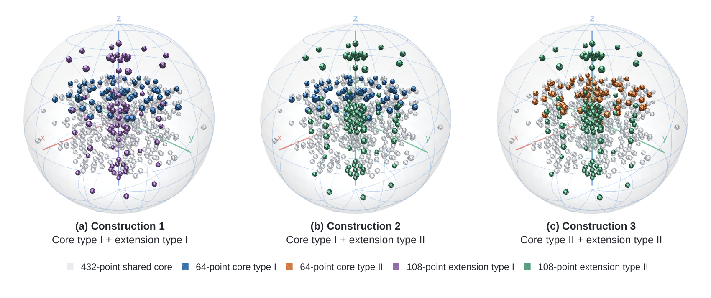
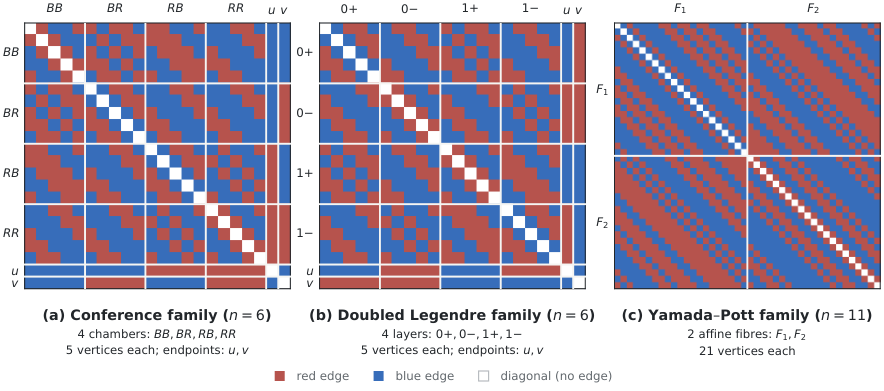

Theoretical findings discovered by the multi-agent system were formally verified in Lean with GPT-5.5 assistance, and the verification code is released.
Abstract
We study autonomous mathematical discovery in the Station, an open-world multi-agent environment in which AI agents from different model families pursue a shared research goal without a central coordinator or scripted pipeline. Agents choose their own research directions, conduct experiments, collaborate and publish papers. These papers accumulate into a shared body of knowledge that later agents can read, cite and extend. We evaluated the Station on 12 mathematical construction problems from the AlphaEvolve study and two additional case studies. Five of the 12 problems yielded results novel relative to the prior literature: a new infinite family of finite field Kakeya sets, new exact 604-point kissing configurations in eleven dimensions, improved bounds for the discretized Kakeya needle and sign uncertainty problems, and a substantially improved lower bound for Erdős's minimum overlap problem. Agents also discovered novel infinite families for Book Ramsey numbers. Their research extended beyond searching for high-scoring constructions: agents developed explanations of their findings and proved theorems outside the assigned tasks. These explanations guided further discoveries and were preserved in the agents' papers, making the underlying insights easier for external researchers to understand and build upon. All presented discoveries are supported by exact constructions or proofs formally verified in Lean. We release the source code, full agent dialogues, papers and verification code, providing a transparent record of how these discoveries emerged.
Problem
The question is whether autonomous AI agents in an open-world multi-agent environment, with no central coordinator, can form a research community that builds on accumulated knowledge to make novel mathematical discoveries.
Approach
The Station environment hosts agents from GPT, Claude and Gemini model families. They choose research directions, run experiments, collaborate, and publish reviewed papers into a shared literature. The system was applied to 12 AlphaEvolve construction problems and two further case studies. Theoretical findings were then formally verified in Lean.
Results
Five of the 12 problems gave results novel relative to prior literature. These include a new infinite family of finite field Kakeya sets in dimension 3, three exact 604-point kissing configurations in dimension 11, and an improved lower bound of 0.380552 for Erdős's minimum overlap problem. Agents also found novel infinite families for Book Ramsey numbers.

Figure 10 : The three 604 -point kissing configurations in \mathbb{R}^{11} , shown under the same orthogonal projection into \mathbb{R}^{3} . All three share the same 432 -point rational core, shown in light gray, and each has the form 432+64+108 . Constructions 1 and 2 use the same 64 -point core type, so their complete 496 -point cores agree, but they use different 108 -point extensions. Constru

Figure 13 : Block-ordered adjacency matrices for the smallest nontrivial members of the three infinite families. Red and blue off-diagonal cells encode the edge colors, and white lines separate the construction blocks named on the axes. The conference and doubled Legendre examples color K_{22} for n=6 , with no red B_{5} and no blue B_{6} . The Yamada–Pott example colors K_{42} for n=11 , with no
Construction
1
2
3
Touching pairs
19,704
22,904
22,840
Centrally symmetric
Yes
Yes
No
Antipodal pairs
302
302
238
Distinct pairwise angles
22
14
15
Properties of the three 604-point kissing configurations in R^11